TEGE
The Enjin Game Engine
Aesthetics and accessibility are first and foremost. Pick any visual look, from PS1 retro to modern PBR lighting, in a single dropdown, and every videogame you make is accessible to every player by default.
v0.9.7 Preview Available • Free & Open Source • 1,900+ automated tests • 1.0 Launch Spring 2027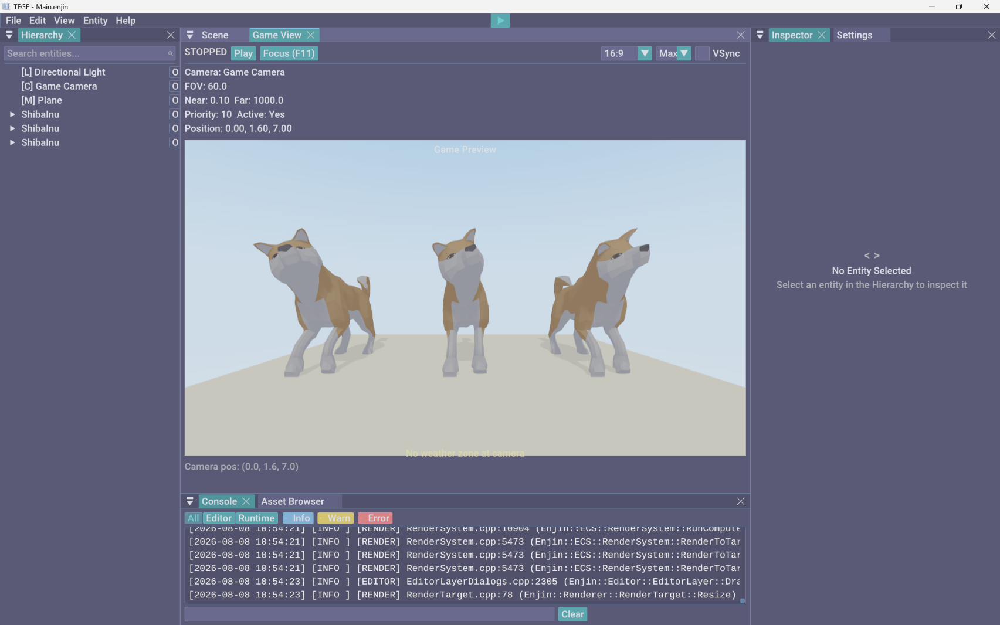
We believe in demystifying making videogames. TEGE is built to encourage artists and dreamers of all types and abilities to make them.
Aesthetics & Accessibility, First and Foremost
Most engines treat how your videogame looks and who can play it as things you figure out at the end. TEGE puts them first, and everything else in the engine is built around that.
- Every rendering style, one dropdown. Switch between PBR, PS1 retro, hand-painted, cel-shaded, pixel art, sketch, and analog CRT instantly, no shader math.
- Accessible options, instantly. Colorblind modes, input remapping, switch access, OpenDyslexic fonts, and a screen reader ship in every videogame by default.
- Beginner friendly. Start from ready-to-run genre templates, wire logic with visual nodes, and drop into AngelScript whenever you are curious what is underneath.
- One-click web build. Export to the browser on WebGPU and WebAssembly, or to Windows desktop, and share a playable link the moment it is ready.
One Scene, Every Style
The same scene, re-rendered by switching a single preset. Go from clean PBR to PS1 retro to cel-shaded without touching a shader.
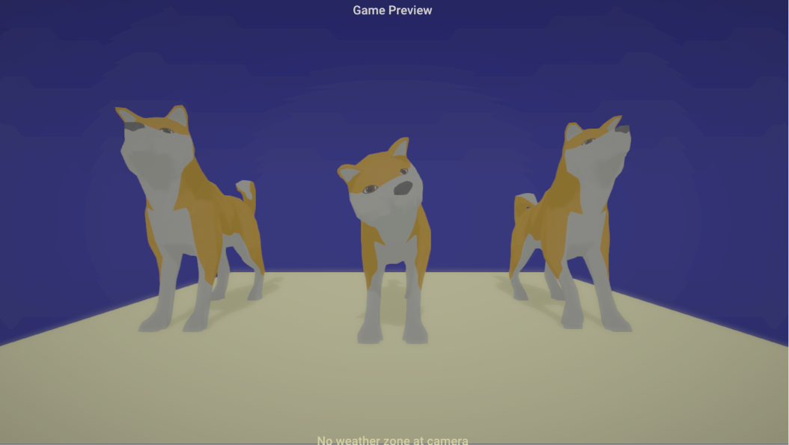
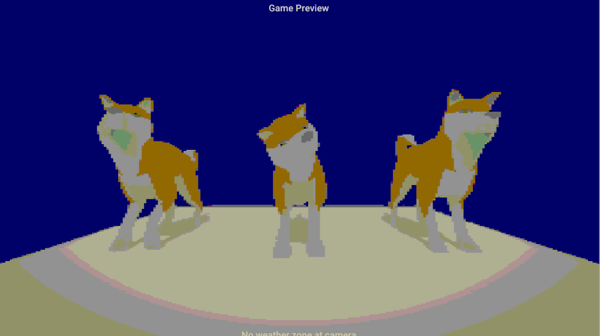
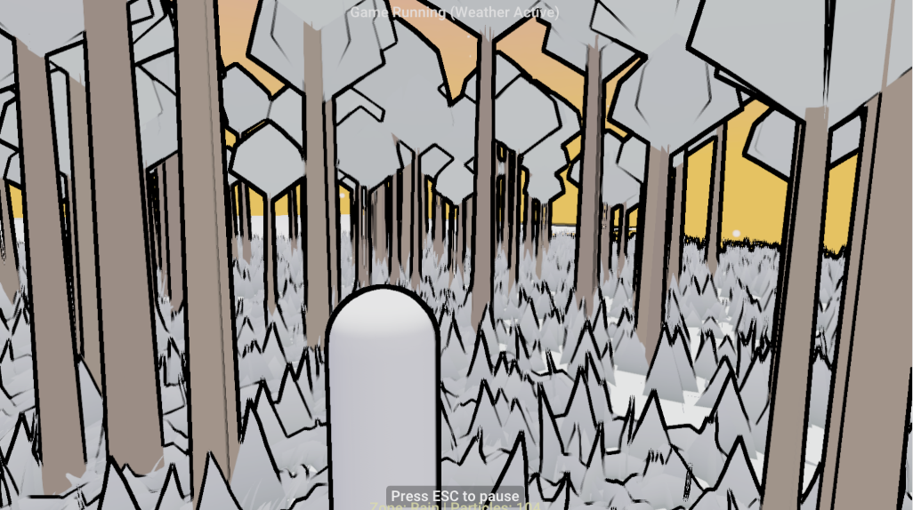
- Aesthetics come first, not as a polish pass at the end.
- Every player should be able to play what you make.
- You should not need a computer science degree to start.
- Shipping should be one click, with no surprise royalties.
Engine Features & Creator Tools
From one-click art presets and visual scripting to universal accessibility and one-click web export.
Everything in the Box
Look and feel. One-click art style presets from PS1 wobble to painterly. Retro effects: dithering, CRT, palette crush, the gatekept 4th to 6th gen console looks. Ray tracing when the hardware has it. Gaussian splat import: photoreal phone captures as scene objects. Custom shader graph, post-process volumes, procedural skies with custom clouds, non-Euclidean spaces and 4D projection for the weird stuff.
World and simulation. Dynamic fabric: tearable cloth that catches the wind. Weather in zones, seasons that change the trees. Water three ways, including fluid simulation that carves terrain. GPU particles with world collision. Living vegetation. Destructibles, Voronoi fracture, metaballs, reaction-diffusion. An elemental system where fire spreads and water douses.
Procedural generation. Dungeon generator, wave function collapse in 2D and 3D, scatter with Poisson and Voronoi modes that conforms to terrain, terrain generation with erosion and auto-splatting, random bags with Markov chains. Everything seeded and replay-stable.
Play and feel. Character controllers for every genre. Time rewind as a game mechanic and a debug tool. Shareable replays: record a session, export one file, someone else watches it, with bookmarks that mark bugs by themselves. Surface response, quests, dialogue trees, cinematics, tiered saves, dynamic difficulty, IK and motion matching.
Sound. DAW-style audio: buses, event graphs, audio-reactive visuals that pulse to the music. Spatial audio with HRTF, occlusion, and per-zone reverb through Steam Audio. MIDI input as a controller.
The editor. Build within three clicks. Every component explains itself: what it does, how to use it, what it connects to. The wiring board: flip any entity into a node map. Non-destructive scene variant layers. A DAW-style play transport that scrubs backward through time. Real-time collaborative editing, pixel editor, vector drawing, terrain brushes, git integration.
Openness. Your game is a file you own: readable JSON scenes, plain-text scripts, documented formats. AngelScript with a beginner-friendly skeleton, deep C++ when you want it. An MCP server so any AI agent becomes a copilot. Desktop builds and web export. No account, no license server, works fully offline.
Accessibility from the ground up. Colorblind modes, screen reader, subtitles, content warnings, remappable and alternative input, reduced motion honored everywhere, OpenDyslexic built in. Every exported game ships with the accessibility menu.
Aesthetics & Preset Rendering
Aesthetics come first. Switch the entire look of your videogame from a single dropdown: Realistic PBR, Blinn-Phong, Hand-Painted, Cel/Toon, PS1 Low-Poly, Pixel Art, NPR Sketch, or Analog CRT. On top sit more than 30 post-processing effects (bloom, depth of field, film grain, PS1 jitter, halftone, anime outlines, chromatic aberration) and an experimental Vulkan ray tracing and path tracing backend with SVGF filtering and Intel OIDN denoising. No shader math required.
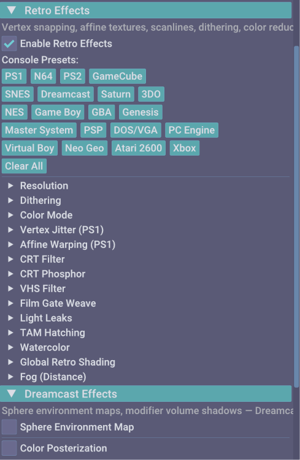
Visual Scripting, AngelScript & ECS
Build logic the way that fits you. Wire interactions, quest triggers, and state machines with visual node graphs, or write AngelScript against 1,100+ API bindings with hot-reload for C++-level control over gameplay, custom components, and math.
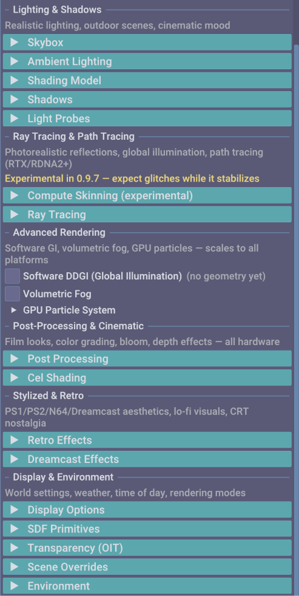
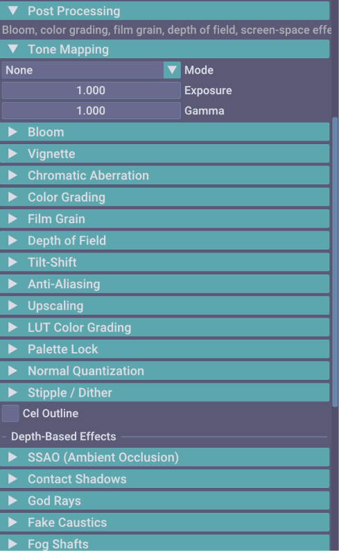
Physics & Character Controllers
Jolt (3D) and Box2D (2D) power ragdolls, destructibles, vehicles, and six joint types. Seven character controllers ship ready to use: 2D platformer, 2D top-down, 3D FPS, 3D third person, 3D top-down, vehicle, and surface-aligned. Node graph editors cover shaders (54 node types), behavior trees, dialogue, quests, and audio events.
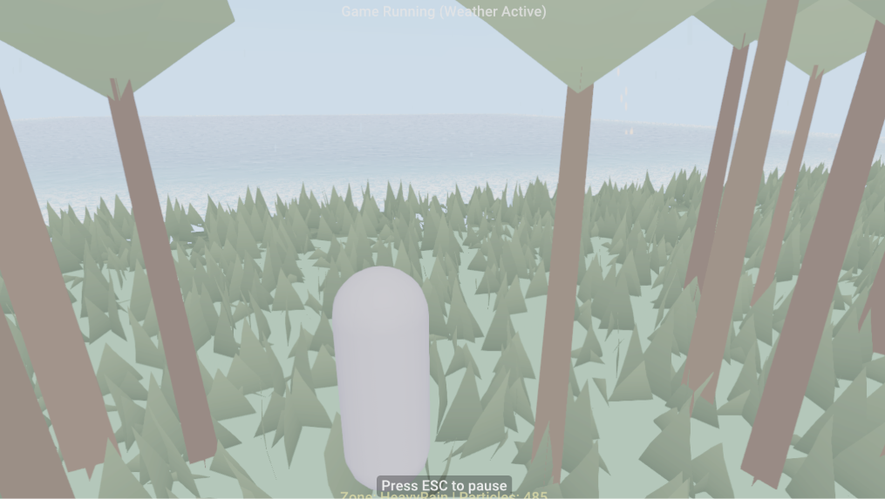
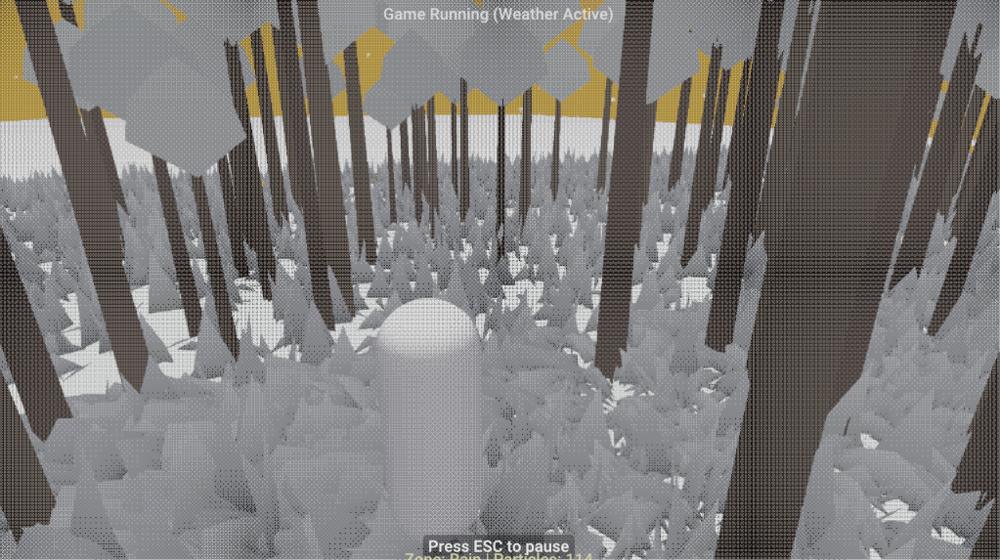
Universal Accessibility
Every videogame made in TEGE ships accessible by default, across four areas:
- Vision. 8 colorblind correction modes, high-contrast themes, and dynamic font scaling.
- Motor. Full input remapping, one-handed control presets, dwell click, and switch access.
- Cognitive. OpenDyslexic font mode, reduced-motion toggles, and configurable content warnings.
- Audio & communication. Built-in screen reader, subtitles with speaker tags, and audio-visual indicators.
Playable Demo Scene & Gallery
Play a demo scene made in TEGE right in your browser, or explore screenshots of the editor interface.
Play a Demo Scene in Your Browser
A demo scene built in TEGE, running on the engine's WebGPU player compiled to WebAssembly. This is what your videogame looks like after one-click web export.
Requires a WebGPU-enabled browser (Chrome or Edge 113+ recommended).
Editor & Engine Screenshots


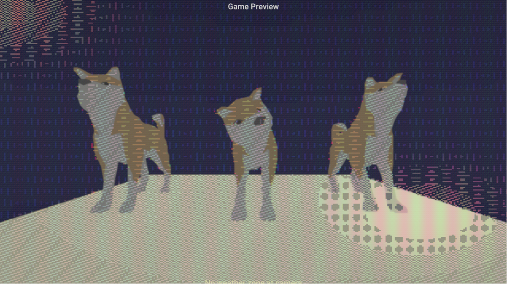
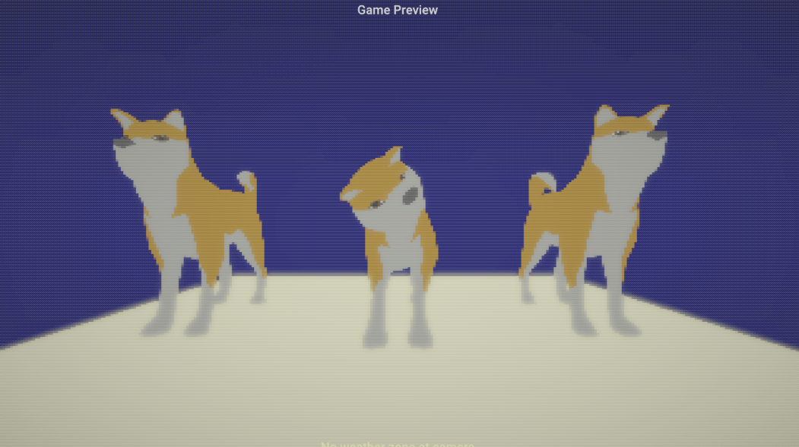
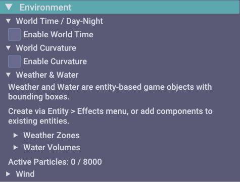
Attention to Detail
The same shot under a few different black-and-white dither patterns. Look up close and the difference is all in the texture.
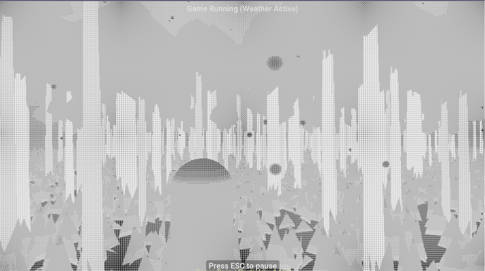
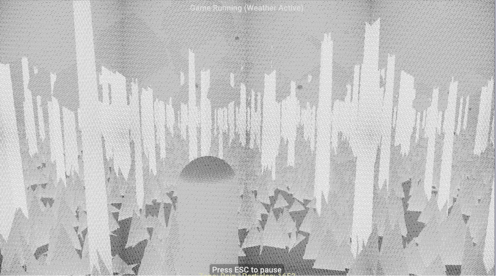
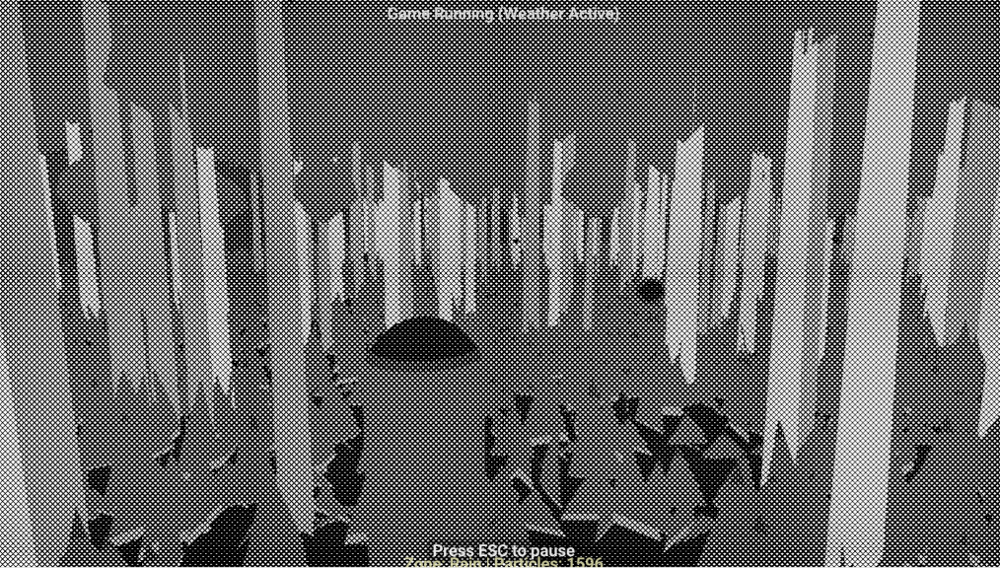
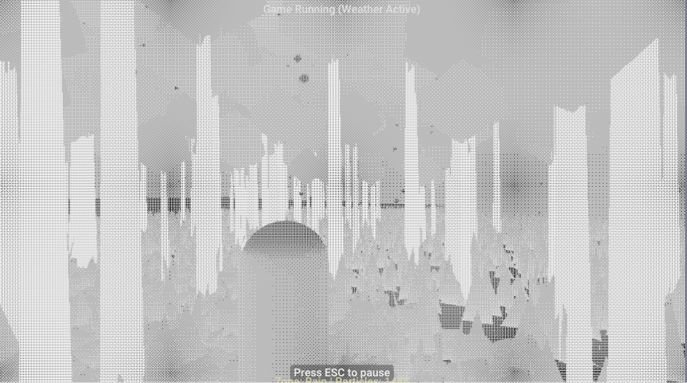
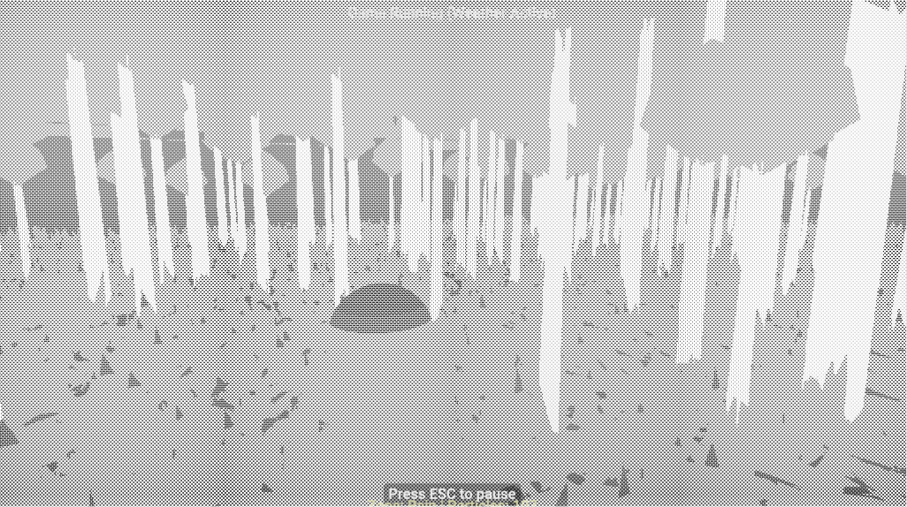
Starter Project Templates
Every new project can start from a genre template, wired and ready to run:
- 2D Platformer. Box2D character controller, tilemap importer, and coyote-time mechanics.
- 3D First Person. FPS controller, weapon sway, raycast shooting, dynamic lights, and sound events.
- PS1 Retro Horror. Vertex jitter, affine texture mapping, fixed cameras, and tank controls.
- Top-Down Action RPG. Top-down camera, quest graph, dialogue trees, and Jolt physics collisions.
Download TEGE & Documentation
Download the Windows preview build, read the 10-minute quickstart guide, or browse full API documentation.
TEGE 0.9.7 Preview Release
Free to download and use under the Business Source License 1.1.
Make and sell commercial videogames with zero upfront costs.
Quickstart (10 minutes)
Download & Extract
Download TEGE-0.9.7.zip (12 MB). Extract and launch the standalone editor binary.
Pick a Template
Choose a starter project (2D Platformer, FPS, Retro PS1, Top-Down, etc.).
Script & Design
Use AngelScript or visual node scripting. Pick an Art Style preset from the dropdown.
Export & Ship
Build a standalone Windows executable or export to WebGPU HTML5 web package with 1 click.
Hardware & System Requirements
Windows Desktop Requirements
- OS: Windows 10 or Windows 11 (64-bit)
- Graphics: Dedicated GPU with Vulkan 1.3 support
- RAM: 4 GB RAM minimum
- Storage: ~250 MB disk space
WebGPU Browser Requirements
- Supported Browsers: Chrome 113+, Edge 113+
- Experimental: Firefox & Safari WebGPU flags
- WASM: WebAssembly execution enabled
Documentation & Resources
Full API Documentation
Complete C++ and AngelScript API reference covering every component, rendering pass, and event.
User Manual & Guides
Step-by-step editor walkthroughs, accessibility configuration guides, and asset pipeline instructions.
Source Build Guide
Instructions for building TEGE from source code with CMake, MSVC, Clang, or GCC on Windows and Linux.